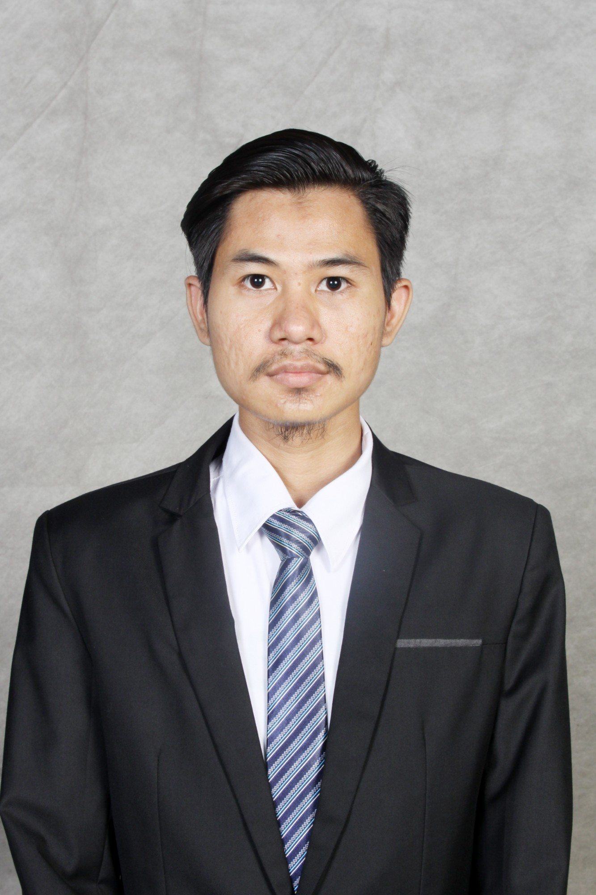

2023 — Present
Web Developer · Eyden Kreatif Digital
Contributed to website development for Generasi Maju, Nutriclub, Bebeclub, and Enesis Group.
Web DevelopmentCMSPerformanceSEO
Software Engineer
I build scalable web applications, APIs, CMS platforms, and digital products — with a strong focus on PHP, JavaScript, web performance, and technical SEO.

Software Engineer
Backend-minded full stack developer with experience across enterprise, education, banking, consumer products, and CMS projects.
About
I’m a software engineer with professional experience since 2018, working across web development, CMS, API systems, performance optimization, and technical SEO.
My work has included consumer-facing websites for Generasi Maju, Nutriclub, Bebeclub and Enesis Group, as well as banking CMS projects for Bank BTN and Bank Syariah Indonesia.
I’ve also taken on broader responsibilities as a full stack developer, system analyst, and project manager — giving me a practical perspective from implementation through delivery.
Experience
2023 — Present
Contributed to website development for Generasi Maju, Nutriclub, Bebeclub, and Enesis Group.
2022
Contributed to the development of CMS platforms for Bank BTN and the new CMS for Bank Syariah Indonesia.
2019 — 2022
Worked across full stack development, system analysis, and project management for education, banking, cooperative, and higher-education systems.
2018 — 2019
Contributed as a full stack developer on an education information and management system based on Kurikulum 2013.
Selected work
A selection of work across consumer products, banking, education, and business systems. Detailed case studies can be added as the portfolio evolves.
Website development work across Generasi Maju, Nutriclub, Bebeclub, and Enesis Group, with attention to content management, frontend experience, performance, and technical SEO.
Contributed to CMS development for Bank BTN and the new CMS of Bank Syariah Indonesia.
Worked as a full stack developer, system analyst, and project manager on an education information and management system based on Kurikulum 2013.
Contributed to Bank KI-KD, KPSBU savings & loans cooperative web, and Aplikasi Siprodi for Open University, spanning development and project management responsibilities.
Skills
Backend
PHP · Laravel · REST APIs · CMS development
Frontend
JavaScript · Vue.js · HTML · CSS · Responsive UI
Data
MySQL · relational data modeling · query optimization
CMS
Pimcore · Filament · custom CMS platforms
Performance
Web performance · technical SEO · frontend optimization
Delivery
Git · Linux · project coordination · system analysis
Beyond work
Outside software development, I enjoy futsal, badminton, mini soccer, and running.
Contact
I’m always open to conversations about software engineering, web products, and new opportunities.